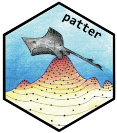

Package index
-
model_move_xy()model_move_xyz()model_move_cxy()model_move_cxyz() - Movement models
-
model_obs_acoustic_logis_trunc()model_obs_depth_uniform_seabed()model_obs_depth_normal_trunc_seabed()model_obs_container() - Observation models
-
assemble_timeline()assemble_acoustics()assemble_archival()assemble_custom()assemble_xinit_containers()assemble_acoustics_containers()assemble_containers() - Assemble observations
-
cl_lapply()cl_chunk() - Parallelisation via
lapply()
-
coa() - COA: centres of activity
-
dat_path()dat_coa()dat_pff()dat_pfb()dat_tff() - Datasets: example algorithm outputs
-
dat_mooringsdat_detectionsdat_archivaldat_gebco()dat_coast()dat_mpa() - Datasets: the MEFS project
-
example_setup() - Examples: streamline set up
-
file_path()file_list()file_size()file_cleanup() - Utilities:
filehelpers
-
glossary - Glossary
-
julia_connect() - Julia: connect
RtoJulia
-
julia_validate() - Julia: validate the
R—Juliainterface
-
as.im.SpatRaster()as.owin.SpatRaster()as.owin.sf()bw.h()map_dens() - Map: point density
-
map_hr_prop()map_hr_core()map_hr_home()map_hr_full() - Map: animal home ranges
-
map_pou() - Map: probability-of-use
-
pat_setup_data() patterset up: datasets
-
pf_plot_xy() - Deprecated functions
-
julia_progress() patteroptions: progress
-
patter-packagepatter patter: particle algorithms for animal movement
-
patter_run()patter_run_expensive() - Examples: run code
-
pf_filter() - PF: particle filter
-
pf_particles-class - PF:
pf_particlesobjects
-
set_vmap()pf_smoother_two_filter() - PF: two-filter smoother
-
plot(<ModelMoveXY>)plot(<ModelMoveXYZ>)plot(<ModelMoveCXY>)plot(<ModelMoveCXYZ>) - Movement model plots
-
plot(<ModelObsAcousticLogisTrunc>)plot(<ModelObsDepthUniformSeabed>)plot(<ModelObsDepthNormalTruncSeabed>)plot(<ModelObsContainer>) - Observation model plots
-
plot_xyt() - Plots: plot coordinates (
x,y,t)
-
set_map() Julia: set the map(s)
-
set_seed() Julia: set the seed
-
sim_array() - Simulation: acoustic arrays
-
sim_observations() - Simulation: observations
-
sim_path_walk() - Simulation: movement walks
-
skill_mb()skill_me()skill_rmse()skill_R()skill_d() - Skill: evaluation metrics